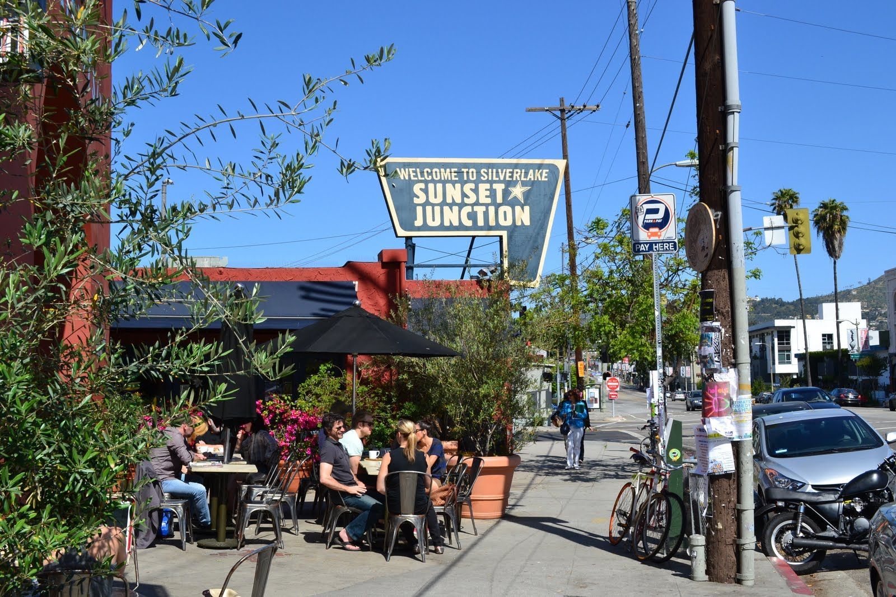
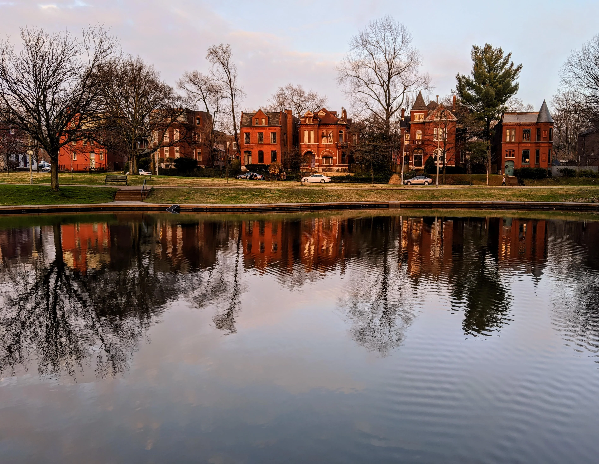

While I grew up in St. Louis, this particular list begins with Chicago in 2010. I was 21 and a bit aimless.
My cousin managed a catering company, and her husband was a rising star in the restaurant world. They were huge Phish-heads but they did a lot for me so I won't hold it against them. She hired me and let me stay with them for free, and the job paid $16/hr. This was an astronomical wage to me at the time, having spent my high school and college years earning from $6.00-$7.50/hour.
It was a good job and a good experience. We worked all over the city, at events ranging from parties in the park to weddings of the uber-rich at places like Shedd aquarium. I took public transportation all over the city, and it's something I miss greatly in St. Louis.

After my stint in Chicago, I finished a degree in English at UMSL. This was a rather unremarkable period of my life and I don't really remember much of it. Anyways, in 2012 I moved to Los Angeles. My best friend from high school lived out there working in production and convinced me to join him. We shared a studio apartment in Los Feliz for about 3 months, and I got a job as a producer's assistant. My friend and I found another roommate and moved to an apartment with more than one room in Silverlake. It was a significant upgrade and we had a walkout balcony with an incredible view of the downtown skyline.
I spent about 6 years in Los Angeles, and really loved the city. Sometimes I regret leaving it, especially in February. I worked for the same producer the entire time; first for his little company in Beverly Hills, and then at Fox (The broadcast network, not the cable news channel. It's important to me that I make that distinction). I met a girl from New York City during that period and spent a lot of time there. Ultimately, I decided to move there. I had a job lined up working for a guy named Scott Rudin. After learning he was an absolute monster, I backed out of that job and realized I didn't really want to continue in the entertainment industry.
My relationship ended and I no longer had any desire to move to New York and start from scratch, so I went back home to St. Louis.

Back in St. Louis, I got a job as a bartender and moved to the Benton Park neighborhood, where I luxuriated in being able to afford a 2 bedroom apartment to myself. I started learning how to code through various online courses like Harvard CS50. I re-enrolled at UMSL, this time as a computer science major. I made a lot of good friends and had a lot of good times in the restaurant industry. I did pretty well in school. Fast forward to March 2020. There are rumblings about a new pandemic. Having lived through bird flu, swine flu, SAARS, etc. I didn't really pay that much attention to it.
Then one night, I got off work in the Central West End and got into a catastrophic car accident on my way home. I broke my neck and pretty much all of my ribs. I was in the hospital for 8 days and then had to move back in with my folks. The pandemic shutdowns started the day I was released. I couldn't afford to go back to school, so I ended up two (2) classes shy of a degree. It took me over a year to fully recover, but fully recover I did. I didn't have any luck applying for software jobs, so I got a job in utility construction. It was not a good fit for me, so when I finally got COVID in 2022 and it knocked me out for 2 weeks, I just put in my resignation.
Some time passed, and I figured I'd make one last shot at a career in software development. I applied to Launchcode and here I am, and very grateful for it.